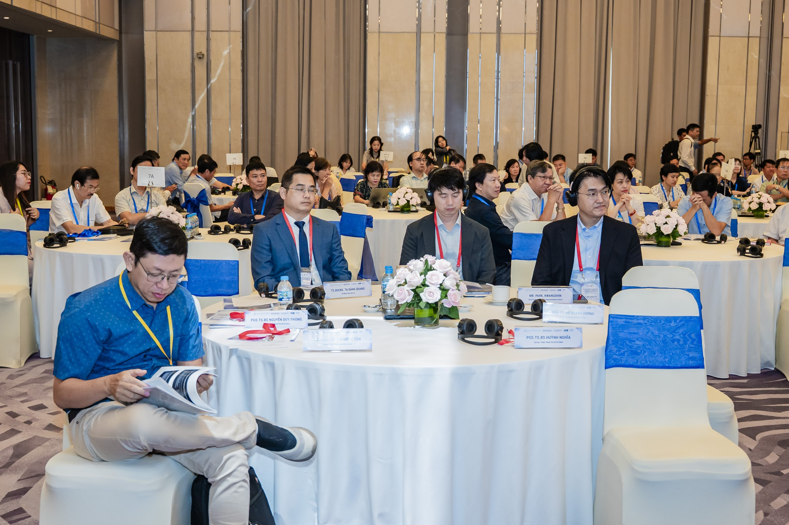
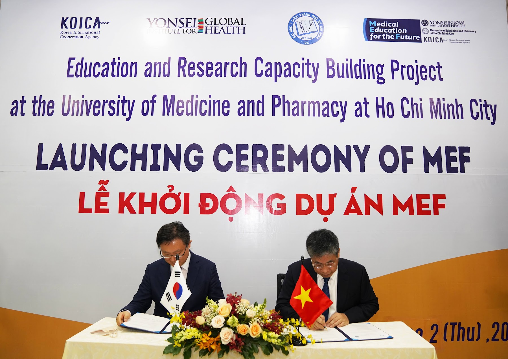
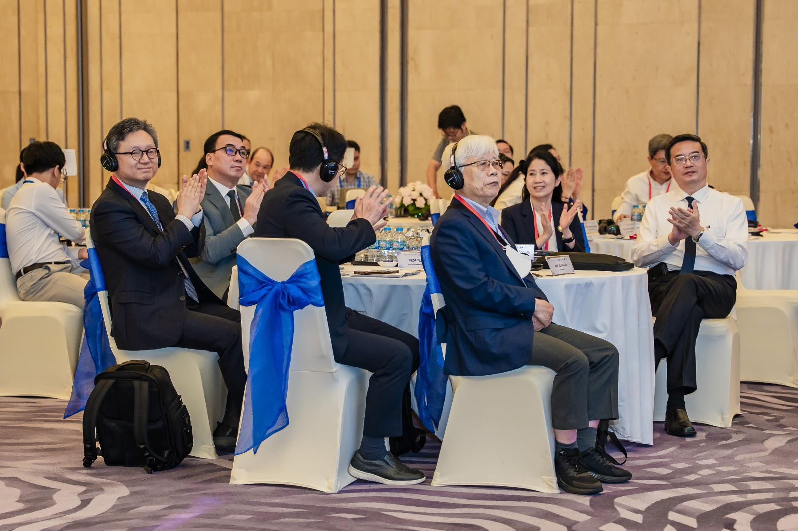

KOICA · Yonsei University Health System · UMP | 2021 – 2026
의학교육 과정 개편부터 임상수련 표준화, 연구역량 강화, 산학협력까지 — 베트남 최초의 의사 국가면허시험 도입을 뒷받침한 60개월의 기록입니다.
베트남은 의료인력의 양적 성장에 비해 교육의 질 관리 체계가 충분히 갖춰지지 않은 상황이었습니다. 이 사업은 호치민의약학대학교(UMP)가 스스로 교육·연구의 질을 관리할 수 있는 체계를 갖추도록 지원하여, 베트남 보건의료 인력의 지속가능한 질적 향상(SDG 3.c)에 기여하는 것을 목표로 합니다.
2018년 UMP 총장단의 연세의료원 방문에서 시작된 교류가 2019년 기관 간 MOU로 이어졌고, 2021년 협의의사록(RD) 체결을 거쳐 정부 간 협력사업으로 공식 출범했습니다. 사업 중반인 2025년에는 베트남 보건부가 UMP를 국가의사시험위원회 핵심기관으로 지정하면서, 본 사업단에 국가면허시험 도입 기술지원이 공식 요청되어 사업 범위가 확장됐습니다.

교육 → 수련 → 연구 → 산업으로 이어지는 네 축에서 동시에 역량을 쌓았습니다. 각 분과는 UMP 교수진과 연세대 전문가가 함께 구성한 위원회가 운영했습니다.
ICT 기반 참여형 교육과정 도입, 국제인증 기준(ASK2019·AUN-QA) 대응, 졸업시험·국가고시 문항 개발.
11개 전공과 수련 프로그램을 국제 기준으로 평가·개선하고, PRIMO 평가도구를 개발·적용.
샌드위치 펠로우십으로 교수·대학원생을 양성하고, 연구지원실·학술지(MPR) 체계를 구축.
사업 성과관리 기준(PDM)에 따른 목표 대비 달성 현황입니다. 성과지표 4개 중 2개(연구역량·산학협력)가 목표치를 달성했고, 산출물 지표 9개 중 7개가 목표를 달성했습니다. 나머지 지표는 2026년 총괄평가와 종료선 조사 결과 반영을 앞두고 있습니다.
| 성과지표 | 기초선 | 목표 | 최근 실적 |
|---|---|---|---|
| 1. 국제인증 평가항목 충족률 | 38.39% | 80% | 45.71% |
| 2. 임상수련 프로그램 실행률 | 0% | 100% | 64% |
| 3. 국제수준 연구업적 비중 | 0% | 50% | 73.2% |
| 4. 산학협력 국제업적 비중 | 0% | 50% | 63.5% |
국제인증 충족률은 ASK2019·AUN-QA 92개 항목 중 사업 관련 핵심 10개 항목의 충족 비율. 2026.01 총괄평가 결과는 미반영.
펠로우십은 2025년 수료 6명 포함 최종 41명(100%) 기준.
2025년 6월 베트남 보건부가 UMP를 국가의사시험위원회 핵심기관으로 지정하고 본 사업단에 기술지원을 공식 요청하면서, 한 대학의 교육역량 강화를 위해 설계된 사업이 국가 시험 제도 구축으로 확장됐습니다. 2027년 시행 예정인 베트남 최초의 의사 국가면허시험(NMLE)을 준비하는 과정입니다.
| 회차 | 시기 | 참가 | 수료 | 참여 대학 |
|---|---|---|---|---|
| 1차 | 2025.11 | 109 | — | — |
| 2·3차 | 2026.04 | 254 | 214 | 33 |
| 4차 | 2026.08 | 180 | 137 | 25 |
전국 의과대학 교수진에게 시험 설계도(Test Blueprint) 작성, 문항 개발, 표준설정(합격선) 방법론을 이전했습니다. 수료 요건은 전 일정 75% 이상 출석이며, 수료증은 KOICA 사무소장 명의로 발급했습니다.
| 참여 대학 | 29개교 |
| 등록 인원 | 4,697명 |
| 2교시 완주 | 3,236명 |
| 출제 문항 | 280문항 (교시당 140) |
| 신뢰도 (Cronbach α) | 0.89 |
| 난이도 / 변별도 | 0.479 / 0.203 |
베트남 최초의 전국 단위 의사면허 모의시험입니다. 결과는 제4차 워크숍의 표준설정 실습에 실증 데이터로 사용됐습니다.
본 사업으로 개발한 국가고시 문항 1,500개(본시험 900 · 모의 600)를 베트남 국가의료위원회(NMC)에 공식 인계했습니다. KOICA · NMC · 연세대학교 · UMP 4개 기관이 서명했습니다.
공식 합격선(cut score)은 확정 전이며, 본시험 900문항은 개발이 진행 중입니다.

사업 성과는 한국과 베트남 양측에서 공식적으로 인정받았습니다.